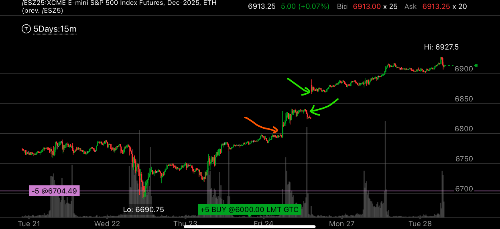
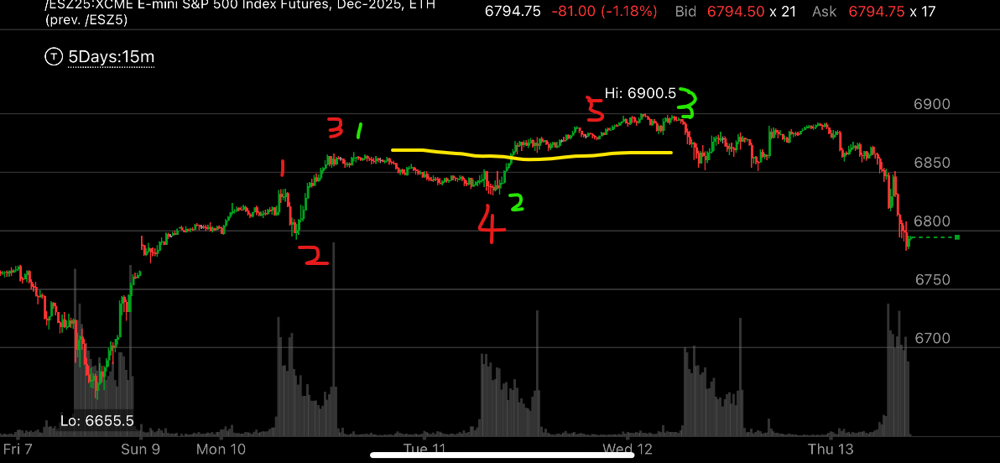

不是5浪走势，而是超买走势
- 并非所有的走势都是五浪走势。
- 有些走势，回调很小，就立刻创新高，看起来似乎是加速，但是因为回调太小了，其实不是加速走势。而是一个叠加的上涨，也就是超买走势。

图示:
- 红色箭头是创新高，然后一直在高位徘徊。
- 绿色箭头，它收盘前稍微回调，然后周日大幅高开，这个不是加速走势，而是一个超买走势。
- 它在视觉上，并不符合拉回走势，第一浪不能是走平的浪，而是应该是尖锐的拉回。

图示:
- 这个图是它随后几天的图，它其实就是一个超买的走势，不是五浪走势。

图示:
- 这个也是超买，我试图用两种方式标记，都不合适。红色标记，2浪太小了。而且第三浪不是加速走势。绿色标记，第一浪是走平的，没有尖锐的样子，第三浪是加速走势。
但是最后也证明，没有第五浪。所以这个完全和五浪走势无关。